Tamanduá Mirim
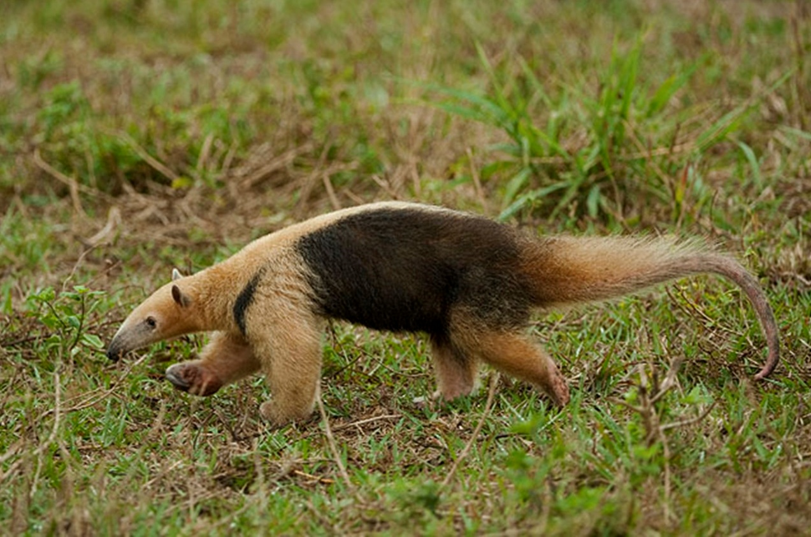
 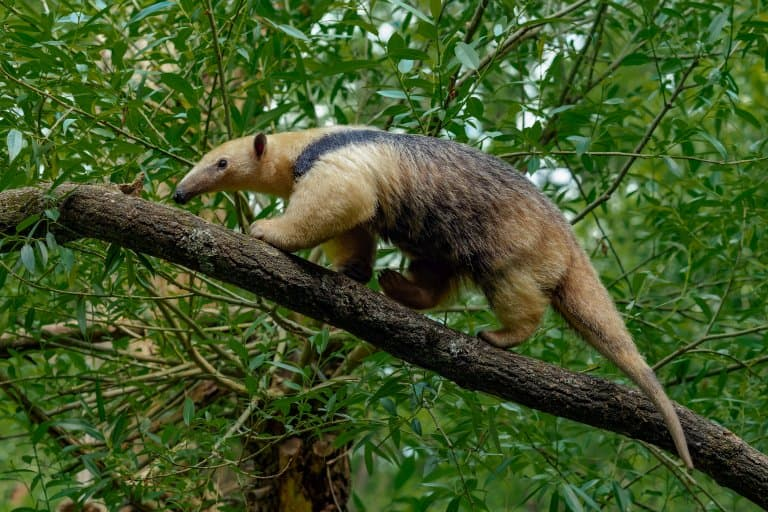
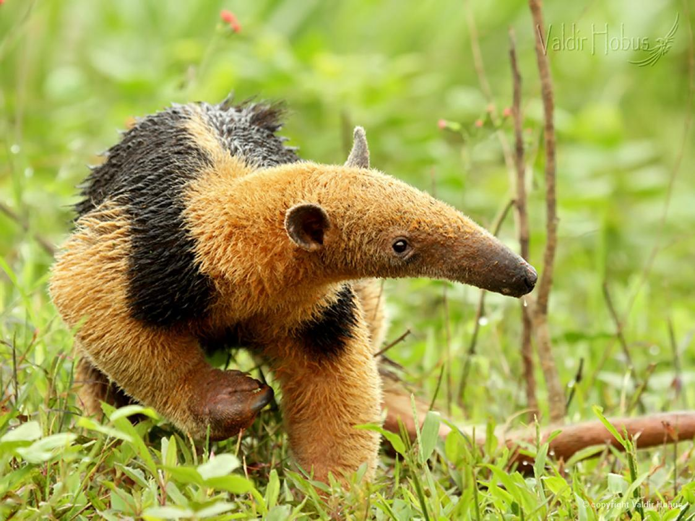
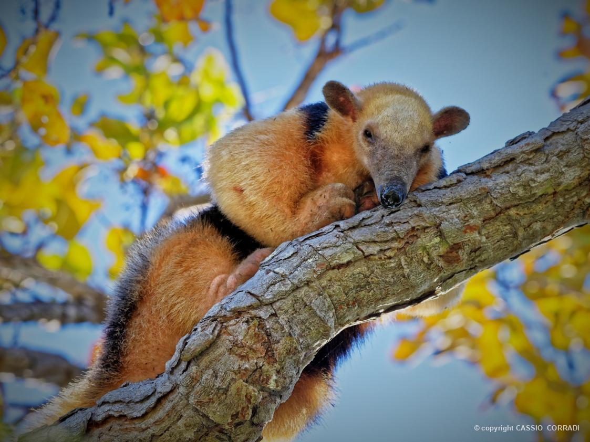
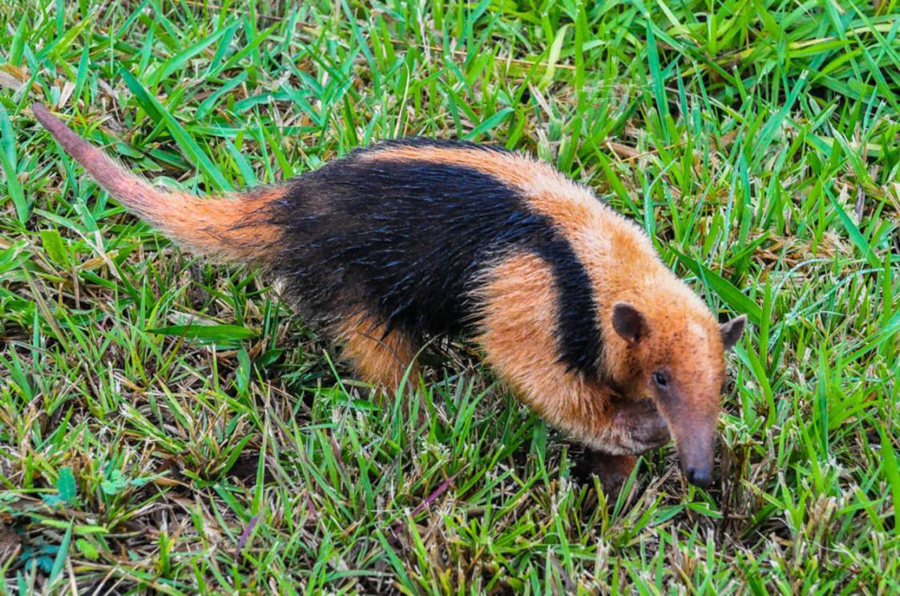
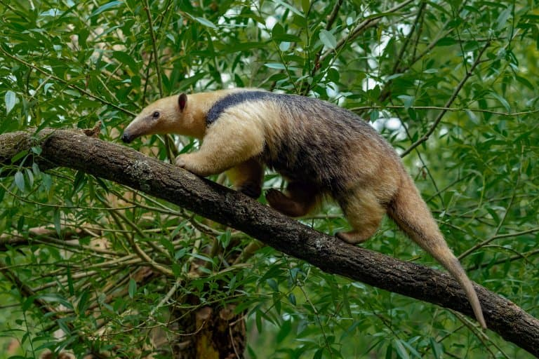
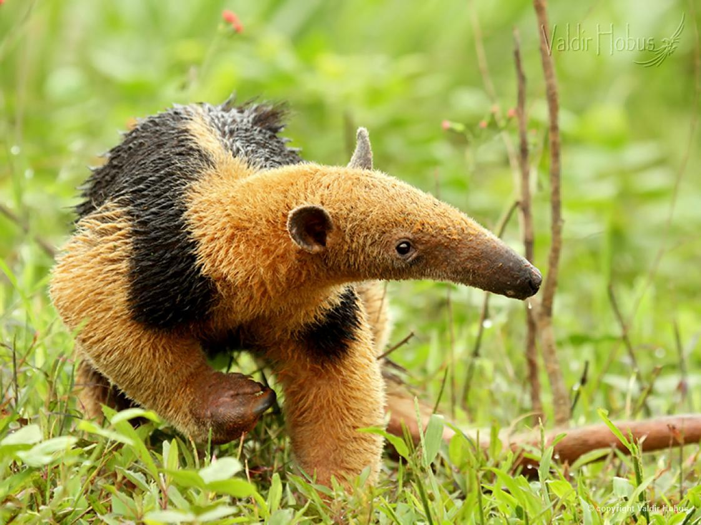
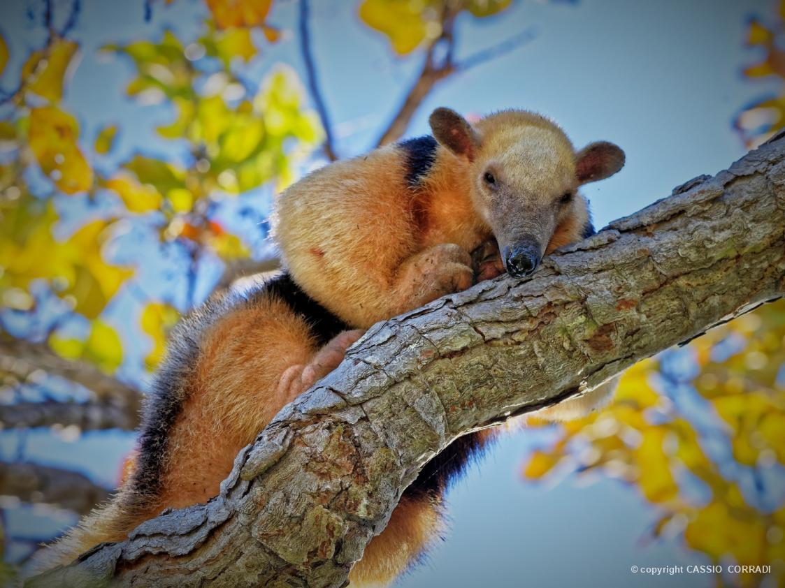
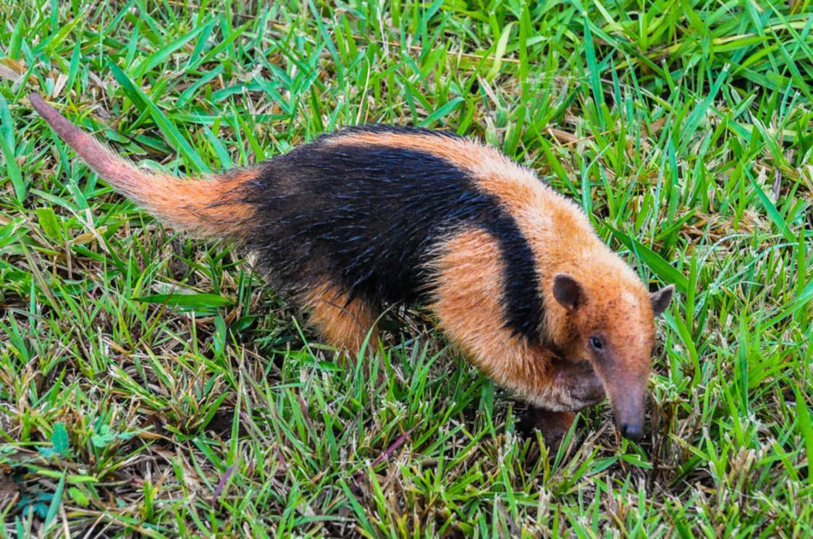
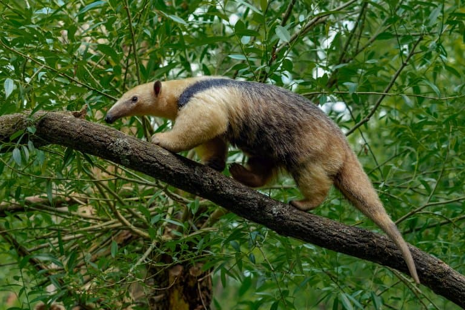
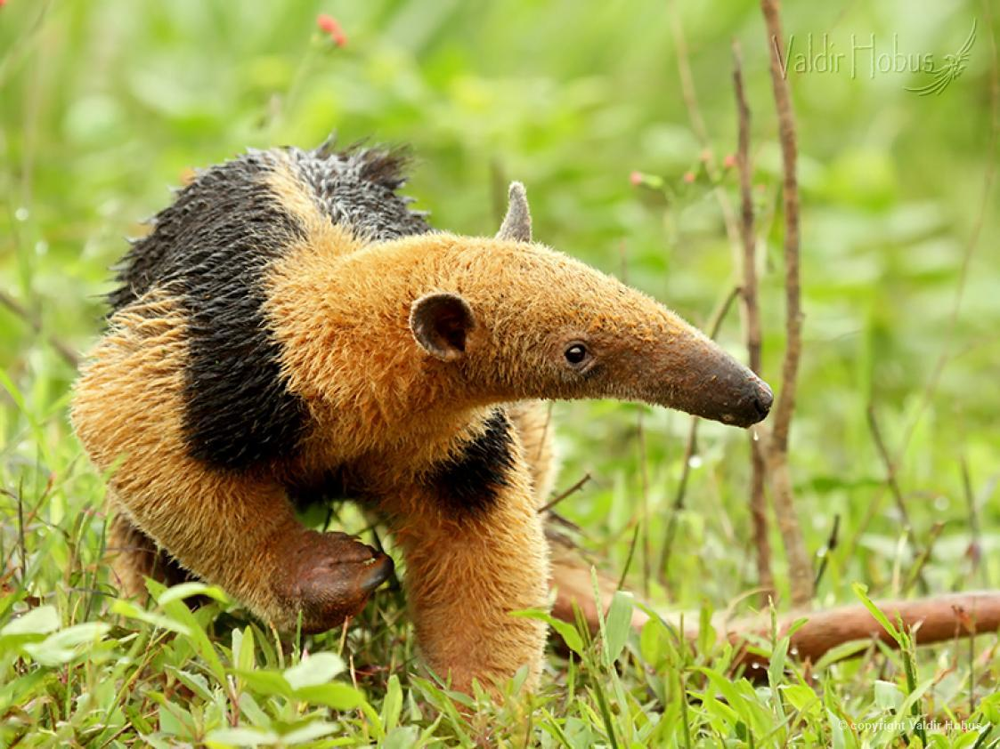
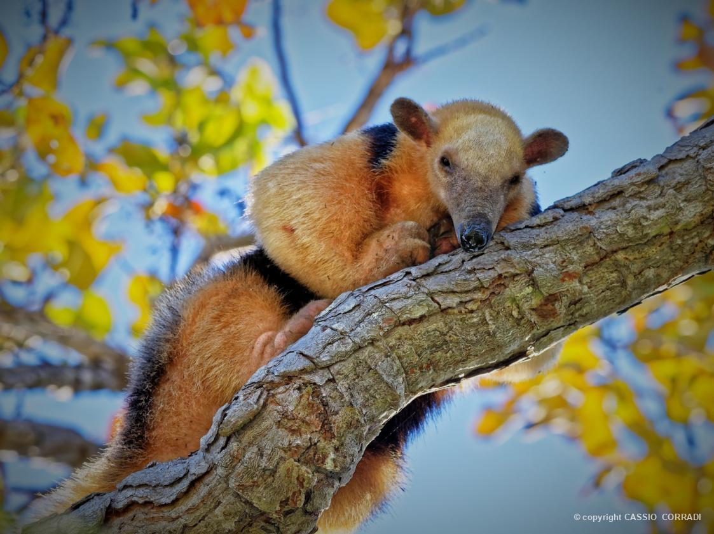
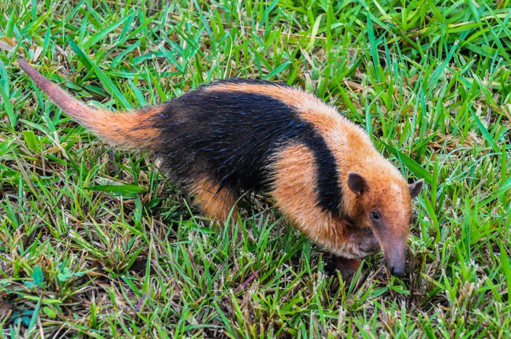
INFORMAÇÕES SOBRE O ANIMAL
- Nome Científico: Tamandua tetradactyla
(E. Geoffroy, 1803) - Nomes Populares: Conhecido também como "tamanduá-mirim" ou "tamanduá-de-pouca-tela"
Classificação Biológica
- Domínio: Eukaryota
- Reino: Animalia
- Filo: Chordata
- Classe: Mammalia
- Ordem: Pilosa
- Família: Myrmecophagidae
- Gênero: Tamandua
- Espécie: T. tetradactyla
Nutrição Geral e Hábitos Alimentares
- Tipo de Nutrição: Insetívoro
- O tamanduá-mirim se alimenta principalmente de formigas e cupins, usando sua língua longa para capturar as presas. Sua dieta é composta quase exclusivamente por insetos, e ele passa a maior parte do tempo forrageando no solo e nas árvores.
Morfologia
- Pelagem e Corpo
O tamanduá-mirim possui uma pelagem densa e áspera, geralmente de cor amarela ou parda com uma faixa preta ao longo da coluna. Seu corpo é menor em comparação com o tamanduá-bandeira, adaptado para um estilo de vida mais arborícola.
Órgãos Respiratórios
Seu sistema respiratório inclui narinas, fossas nasais, cavidade nasal, faringe, laringe, traqueia e pulmões, adaptados para sua vida tanto terrestre quanto arbórea.
Patas
As patas dianteiras têm garras longas e curvas usadas para escavar e se defender. Comportamento
- O tamanduá-mirim é um animal solitário e geralmente noturno, passando a maior parte do tempo forrageando e descansando em árvores. Apesar de seu tamanho pequeno, é um animal ágil e geralmente evita confrontos. Sua comunicação inclui vocalizações e sinais corporais.
Ocorrência
- O tamanduá-mirim é encontrado principalmente na América do Sul, incluindo Brasil, Venezuela, Colômbia e partes do Paraguai e Bolívia. Prefere habitats de florestas tropicais e subtropicais, bem como áreas de cerrado e matas.
- Mapa de Ocorrência
Reprodução
- Sistema de Acasalamento: O tamanduá-mirim é solitário, mas se reúne para a reprodução.
Reprodução ao Longo do Ano: A reprodução pode ocorrer ao longo do ano, com maior atividade durante a estação chuvosa.
Gestação: A gestação dura cerca de 150 a 180 dias.
Ninhadas: As fêmeas geralmente dão à luz um ou dois filhotes, que são cuidados exclusivamente pela mãe até que estejam suficientemente desenvolvidos para se alimentar sozinhos.